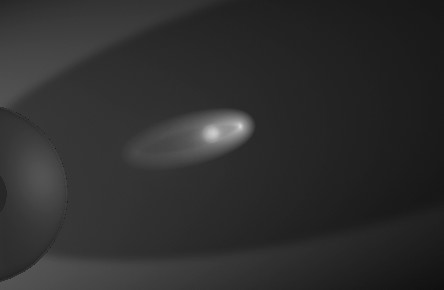
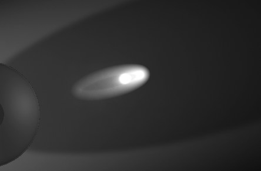
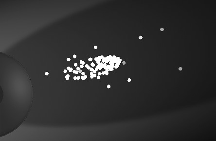

Function available in CINEMA 4D Visualize, Studio
焦散
提示：
下面的描述包含在焦散设置中。
下面的描述包含在焦散设置中。
关于焦散的更多细节可以参见这里。
使用这个选项来激活灯光的表面焦散。
它定义了表面焦散光子的总体起始能量。能量的数值主要控制的是焦散效果的亮度，以及每个光子的反射和折射的最大次数。
能量较低（10,000）的表面焦散。
能量较高（20,000）的表面焦散。
虽然能量和光子参数是相互独立的，但这两个参数都会影响焦散效果。
光子数值会影响焦散效果精度——增加数值会让效果更好。但是，更大的数值也会意味着更长的渲染时间。这个数值定义了会用来计算表面焦散的光子数量。最佳数值通常是10,000 到 1,000,000 之间，这取决于场景的具体情况，如光源和产生焦散的对象之间的距离。
低光子设置的示例：每个光子会显示为一个亮点。
焦散的渲染时间主要取决于使用的光子数量，因此要尽量只使用这个效果所需的光子数量。
焦散效果的外观，即它的锐度，是在材质编辑器的光照页面中设置的。
启用这个选项来激活灯光的体积焦散。
对于体积焦散，要确保灯光是体积光——在属性管理器的常规标签页中，将可见灯光设置为正向测定体积或反向测定体积。
它定义了体积焦散光子的总体起始能量。它会影响焦散效果的亮度和每个光子的反射和折射的最大次数。
 正常能量设置。
正常能量设置。能量设置过高。
这个参数控制的是焦散效果的精度。增加数值会让效果更好。但是，更大的数值也会意味着更长的渲染时间。这个数值是灯光发出产生体积焦散的光子数量。根据步幅尺寸，会计算非常大量的光子数值并保存到光子树中。假设光源发出 1000 个光子，焦散效果长度是 100m，那么会计算 5000 个光子状态并保存到光子树中。所以要尽可能使用少量的光子。
记住，泛光灯比其他类型的光源更加浪费资源，因为它会朝所有方向发出光子。性价比最高的焦散灯光是聚光灯，它可以将光束聚集在要产生焦散的对象上。
这里设置灯光的亮度衰减，有以下选项可以选择：
- 无
- 线性
- 倒数
- 平方倒数
- 立方倒数
- 步幅
细节参见灯光。
参见内部距离。
参见外部距离。